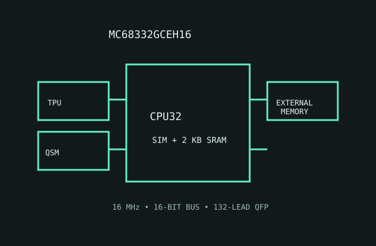

[ MOTOROLA CPU32 // EMBEDDED MICROCONTROLLER ]
Motorola MC68332GCEH16
A CPU32-based embedded controller integrating memory-mapped system logic and real-time peripherals alongside its processor core.

MODEL IDENTIFICATION: MC68332GCEH16, 16 MHz MC68332 grade in the 132-lead QFP package code. This is an embedded microcontroller, not a socketed desktop CPU.
Recorded specifications
| Model | MC68332GCEH16. |
|---|---|
| Generation | Late-1980s/1990s Motorola 683xx embedded controller using the CPU32 generation. |
| Architecture / cores | CPU32, a 68000-family 32-bit CISC core; one processor core with integrated system integration module (SIM), queued serial module and time processor unit. |
| Frequency / cache | 16 MHz speed grade; no on-chip cache. |
| Package / socket | 132-lead plastic quad flat pack (GCE package option); surface-mount board footprint, not a CPU socket. |
| Power | 5 V nominal supply for this ordering generation. No modern TDP; use the part's maximum current/dissipation and board thermal design from the electrical table. |
| Memory / bus | 16-bit external data bus with a 24-bit physical address space; integrated 2 KB SRAM and system/peripheral blocks reduce external chip count, but application memory is board-dependent. |
| Board compatibility | Requires an MC68332-designed board with matching 132-lead QFP land pattern, 5 V interface, oscillator, reset/clock circuitry and memory map. It is soldered down and cannot replace a general-purpose CPU in a socket. |
Compatibility notes
- Verify the full order code and package outline; QFP lead pitch and board land pattern are revision-specific.
- Application firmware must configure the SIM, TPU and serial module; this is not a PC-compatible boot CPU.
- Use the reference manual and board schematic for bus timing, chip selects and external memory requirements.
Sources & further reading
- Motorola MC68332 User's Manual (Bitsavers technical archive)Manufacturer manual archive for the SIM, integrated modules, CPU interface and memory system.
- Motorola CPU32 Reference Manual, Rev. 1 (Bitsavers)Manufacturer CPU32 architectural reference archived for instruction and bus details.